前言
1. 什么是Redis？它主要用来什么的？
Redis，英文全称是Remote Dictionary Server（远程字典服务），是一个开源的使用ANSI C语言编写、支持网络、可基于内存亦可持久化的日志型、Key-Value数据库，并提供多种语言的API。
与MySQL数据库不同的是，Redis的数据是存在内存中的。它的读写速度非常快，每秒可以处理超过10万次读写操作。因此redis被广泛应用于缓存，另外，Redis也经常用来做分布式锁。除此之外，Redis支持事务、持久化、LUA 脚本、LRU 驱动事件、多种集群方案。
2.说说Redis的基本数据结构类型
大多数小伙伴都知道，Redis有以下这五种基本类型：
- String（字符串）
- Hash（哈希）
- List（列表）
- Set（集合）
- zset（有序集合）
它还有三种特殊的数据结构类型
- Geospatial
- Hyperloglog
- Bitmap
2.1 Redis 的五种基本数据类型
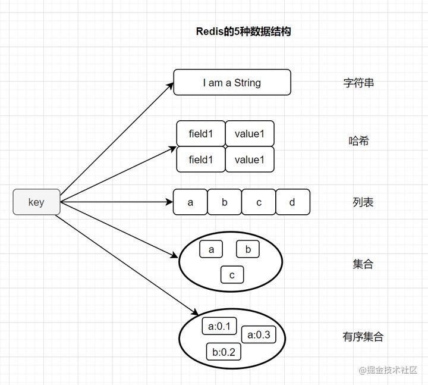
String（字符串）
- 简介:String是Redis最基础的数据结构类型，它是二进制安全的，可以存储图片或者序列化的对象，值最大存储为512M
- 简单使用举例:
set key value、get key等 - 应用场景：共享session、分布式锁，计数器、限流。
- 内部编码有3种，
int（8字节长整型）/embstr（小于等于39字节字符串）/raw（大于39个字节字符串）
C语言的字符串是char[]实现的，而Redis使用SDS（simple dynamic string） 封装，sds源码如下：
struct sdshdr{ unsigned int len; // 标记buf的长度 unsigned int free; //标记buf中未使用的元素个数 char buf[]; // 存放元素的坑 }
SDS 结构图如下：
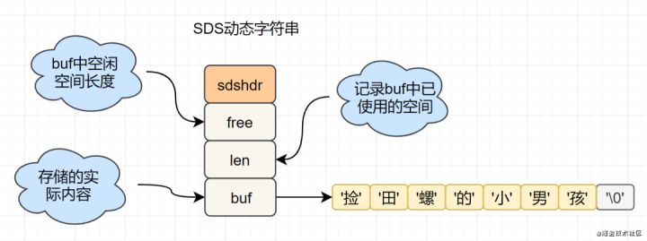
Redis为什么选择SDS结构，而C语言原生的char[]不香吗？
举例其中一点，SDS中，O(1)时间复杂度，就可以获取字符串长度；而C 字符串，需要遍历整个字符串，时间复杂度为O(n)
Hash（哈希）
- 简介：在Redis中，哈希类型是指v（值）本身又是一个键值对（k-v）结构
- 简单使用举例：
hset key field value、hget key field - 内部编码：
ziplist（压缩列表）、hashtable（哈希表） - 应用场景：缓存用户信息等。
- 注意点：如果开发使用hgetall，哈希元素比较多的话，可能导致Redis阻塞，可以使用hscan。而如果只是获取部分field，建议使用hmget。
字符串和哈希类型对比如下图：
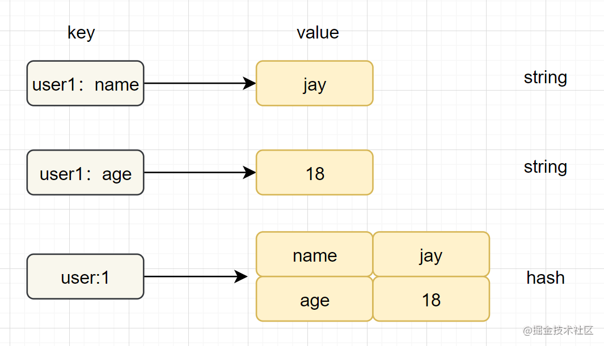
List（列表）
- 简介：列表（list）类型是用来存储多个有序的字符串，一个列表最多可以存储2^32-1个元素。
- 简单实用举例：
lpush key value [value ...]、lrange key start end - 内部编码：ziplist（压缩列表）、linkedlist（链表）
- 应用场景：消息队列，文章列表,
一图看懂list类型的插入与弹出：
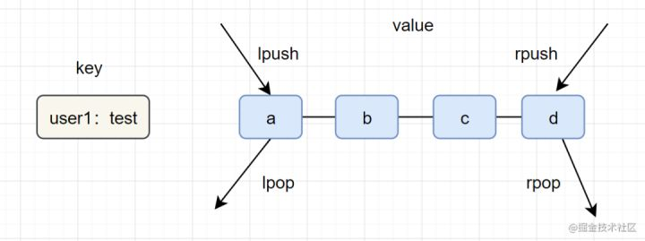
list应用场景参考以下：
- lpush+lpop=Stack（栈）
- lpush+rpop=Queue（队列）
- lpsh+ltrim=Capped Collection（有限集合）
- lpush+brpop=Message Queue（消息队列）
Set（集合）
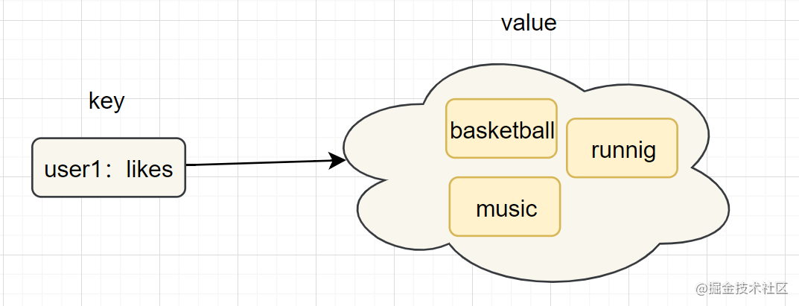
- 简介：集合（set）类型也是用来保存多个的字符串元素，但是不允许重复元素
- 简单使用举例：
sadd key element [element ...]、smembers key - 内部编码：
intset（整数集合）、hashtable（哈希表） - 注意点：smembers和lrange、hgetall都属于比较重的命令，如果元素过多存在阻塞Redis的可能性，可以使用sscan来完成。
- 应用场景：用户标签,生成随机数抽奖、社交需求。
有序集合（zset）
- 简介：已排序的字符串集合，同时元素不能重复
- 简单格式举例：
zadd key score member [score member ...]，zrank key member - 底层内部编码：
ziplist（压缩列表）、skiplist（跳跃表） - 应用场景：排行榜，社交需求（如用户点赞）。
2.2 Redis 的三种特殊数据类型
- Geo：Redis3.2推出的，地理位置定位，用于存储地理位置信息，并对存储的信息进行操作。
- HyperLogLog：用来做基数统计算法的数据结构，如统计网站的UV。
- Bitmaps ：用一个比特位来映射某个元素的状态，在Redis中，它的底层是基于字符串类型实现的，可以把bitmaps成作一个以比特位为单位的数组
3. Redis为什么这么快？
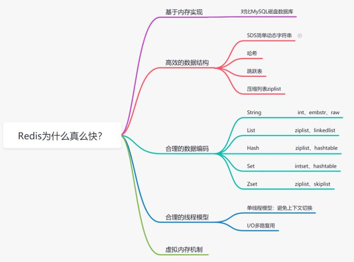
Redis为什么这么快
3.1 基于内存存储实现
我们都知道内存读写是比在磁盘快很多的，Redis基于内存存储实现的数据库，相对于数据存在磁盘的MySQL数据库，省去磁盘I/O的消耗。
3.2 高效的数据结构
我们知道，Mysql索引为了提高效率，选择了B+树的数据结构。其实合理的数据结构，就是可以让你的应用/程序更快。先看下Redis的数据结构&内部编码图：
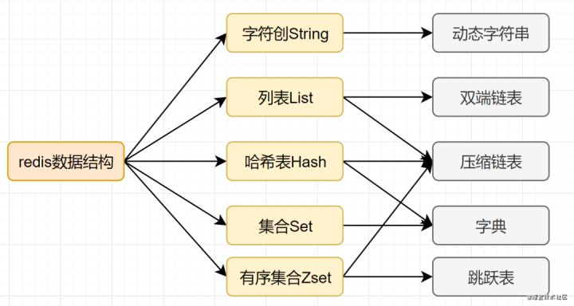
SDS简单动态字符串
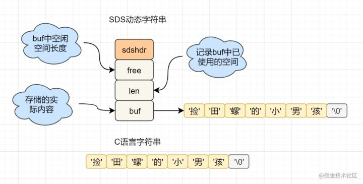
- 字符串长度处理：Redis获取字符串长度，时间复杂度为O(1)，而C语言中，需要从头开始遍历，复杂度为O（n）;
- 空间预分配：字符串修改越频繁的话，内存分配越频繁，就会消耗性能，而SDS修改和空间扩充，会额外分配未使用的空间，减少性能损耗。
- 惰性空间释放：SDS 缩短时，不是回收多余的内存空间，而是free记录下多余的空间，后续有变更，直接使用free中记录的空间，减少分配。
- 二进制安全：Redis可以存储一些二进制数据，在C语言中字符串遇到'\0'会结束，而 SDS中标志字符串结束的是len属性。
字典
Redis 作为 K-V 型内存数据库，所有的键值就是用字典来存储。字典就是哈希表，比如HashMap，通过key就可以直接获取到对应的value。而哈希表的特性，在O（1）时间复杂度就可以获得对应的值。
跳跃表
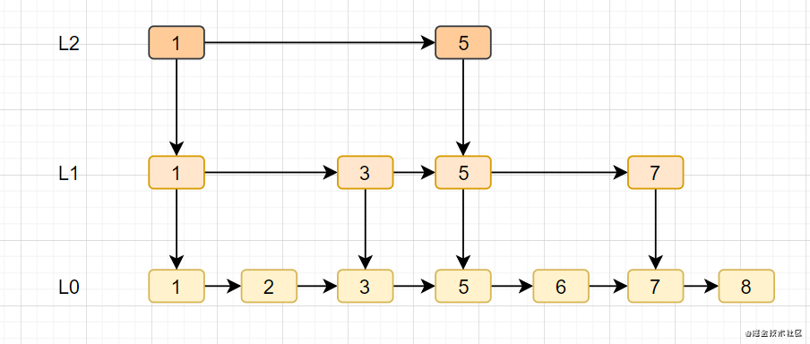
- 跳跃表是Redis特有的数据结构，就是在链表的基础上，增加多级索引提升查找效率。
- 跳跃表支持平均 O（logN）,最坏 O（N）复杂度的节点查找，还可以通过顺序性操作批量处理节点。
3.3 合理的数据编码
Redis 支持多种数据数据类型，每种基本类型，可能对多种数据结构。什么时候,使用什么样数据结构，使用什么样编码，是redis设计者总结优化的结果。
- String：如果存储数字的话，是用int类型的编码;如果存储非数字，小于等于39字节的字符串，是embstr；大于39个字节，则是raw编码。
- List：如果列表的元素个数小于512个，列表每个元素的值都小于64字节（默认），使用ziplist编码，否则使用linkedlist编码
- Hash：哈希类型元素个数小于512个，所有值小于64字节的话，使用ziplist编码,否则使用hashtable编码。
- Set：如果集合中的元素都是整数且元素个数小于512个，使用intset编码，否则使用hashtable编码。
- Zset：当有序集合的元素个数小于128个，每个元素的值小于64字节时，使用ziplist编码，否则使用skiplist（跳跃表）编码
3.4 合理的线程模型
I/O 多路复用
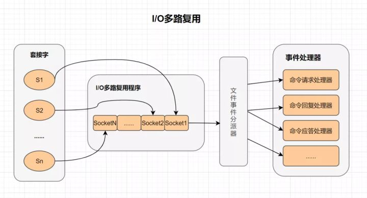
I/O 多路复用
多路I/O复用技术可以让单个线程高效的处理多个连接请求，而Redis使用用epoll作为I/O多路复用技术的实现。并且，Redis自身的事件处理模型将epoll中的连接、读写、关闭都转换为事件，不在网络I/O上浪费过多的时间。
什么是I/O多路复用？
- I/O ：网络 I/O
- 多路 ：多个网络连接
- 复用：复用同一个线程。
- IO多路复用其实就是一种同步IO模型，它实现了一个线程可以监视多个文件句柄；一旦某个文件句柄就绪，就能够通知应用程序进行相应的读写操作；而没有文件句柄就绪时,就会阻塞应用程序，交出cpu。
单线程模型
- Redis是单线程模型的，而单线程避免了CPU不必要的上下文切换和竞争锁的消耗。也正因为是单线程，如果某个命令执行过长（如hgetall命令），会造成阻塞。Redis是面向快速执行场景的数据库。，所以要慎用如smembers和lrange、hgetall等命令。
- Redis 6.0 引入了多线程提速，它的执行命令操作内存的仍然是个单线程。
3.5 虚拟内存机制
Redis直接自己构建了VM机制 ，不会像一般的系统会调用系统函数处理，会浪费一定的时间去移动和请求。
Redis的虚拟内存机制是啥呢？
虚拟内存机制就是暂时把不经常访问的数据(冷数据)从内存交换到磁盘中，从而腾出宝贵的内存空间用于其它需要访问的数据(热数据)。通过VM功能可以实现冷热数据分离，使热数据仍在内存中、冷数据保存到磁盘。这样就可以避免因为内存不足而造成访问速度下降的问题。
4. 什么是缓存击穿、缓存穿透、缓存雪崩？
4.1 缓存穿透问题
先来看一个常见的缓存使用方式：读请求来了，先查下缓存，缓存有值命中，就直接返回；缓存没命中，就去查数据库，然后把数据库的值更新到缓存，再返回。
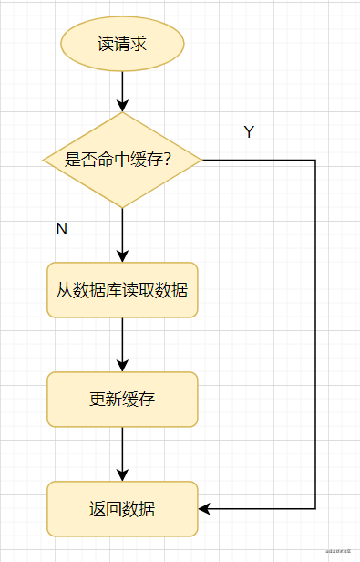
读取缓存
缓存穿透：指查询一个一定不存在的数据，由于缓存是不命中时需要从数据库查询，查不到数据则不写入缓存，这将导致这个不存在的数据每次请求都要到数据库去查询，进而给数据库带来压力。
通俗点说，读请求访问时，缓存和数据库都没有某个值，这样就会导致每次对这个值的查询请求都会穿透到数据库，这就是缓存穿透。
缓存穿透一般都是这几种情况产生的：
- 业务不合理的设计，比如大多数用户都没开守护，但是你的每个请求都去缓存，查询某个userid查询有没有守护。
- 业务/运维/开发失误的操作，比如缓存和数据库的数据都被误删除了。
- 黑客非法请求攻击，比如黑客故意捏造大量非法请求，以读取不存在的业务数据。
如何避免缓存穿透呢？ 一般有三种方法。
- 1.如果是非法请求，我们在API入口，对参数进行校验，过滤非法值。
- 2.如果查询数据库为空，我们可以给缓存设置个空值，或者默认值。但是如有有写请求进来的话，需要更新缓存哈，以保证缓存一致性，同时，最后给缓存设置适当的过期时间。（业务上比较常用，简单有效）
- 3.使用布隆过滤器快速判断数据是否存在。即一个查询请求过来时，先通过布隆过滤器判断值是否存在，存在才继续往下查。
布隆过滤器原理：它由初始值为0的位图数组和N个哈希函数组成。一个对一个key进行N个hash算法获取N个值，在比特数组中将这N个值散列后设定为1，然后查的时候如果特定的这几个位置都为1，那么布隆过滤器判断该key存在。
4.2 缓存雪奔问题
缓存雪奔： 指缓存中数据大批量到过期时间，而查询数据量巨大，请求都直接访问数据库，引起数据库压力过大甚至down机。
- 缓存雪奔一般是由于大量数据同时过期造成的，对于这个原因，可通过均匀设置过期时间解决，即让过期时间相对离散一点。如采用一个较大固定值+一个较小的随机值，5小时+0到1800秒酱紫。
- Redis 故障宕机也可能引起缓存雪奔。这就需要构造Redis高可用集群啦。
4.3 缓存击穿问题
缓存击穿： 指热点key在某个时间点过期的时候，而恰好在这个时间点对这个Key有大量的并发请求过来，从而大量的请求打到db。
缓存击穿看着有点像，其实它两区别是，缓存雪奔是指数据库压力过大甚至down机，缓存击穿只是大量并发请求到了DB数据库层面。可以认为击穿是缓存雪奔的一个子集吧。有些文章认为它俩区别，是区别在于击穿针对某一热点key缓存，雪奔则是很多key。
解决方案就有两种：
- 1.使用互斥锁方案。缓存失效时，不是立即去加载db数据，而是先使用某些带成功返回的原子操作命令，如(Redis的setnx）去操作，成功的时候，再去加载db数据库数据和设置缓存。否则就去重试获取缓存。
- 2. “永不过期”，是指没有设置过期时间，但是热点数据快要过期时，异步线程去更新和设置过期时间。
5. 什么是热Key问题，如何解决热key问题
什么是热Key呢？在Redis中，我们把访问频率高的key，称为热点key。
如果某一热点key的请求到服务器主机时，由于请求量特别大，可能会导致主机资源不足，甚至宕机，从而影响正常的服务。
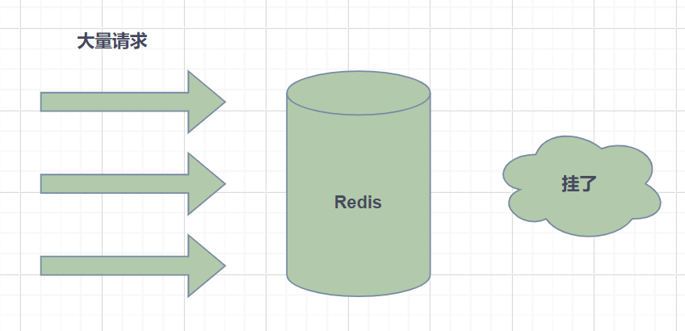
而热点Key是怎么产生的呢？主要原因有两个：
- 用户消费的数据远大于生产的数据，如秒杀、热点新闻等读多写少的场景。
- 请求分片集中，超过单Redi服务器的性能，比如固定名称key，Hash落入同一台服务器，瞬间访问量极大，超过机器瓶颈，产生热点Key问题。
那么在日常开发中，如何识别到热点key呢？
- 凭经验判断哪些是热Key；
- 客户端统计上报；
- 服务代理层上报
如何解决热key问题？
- Redis集群扩容：增加分片副本，均衡读流量；
- 将热key分散到不同的服务器中；
- 使用二级缓存，即JVM本地缓存,减少Redis的读请求。
6. Redis 过期策略和内存淘汰策略
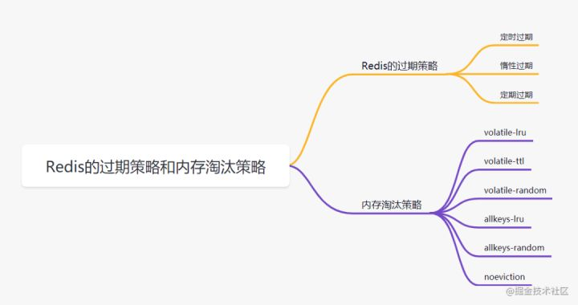
6.1 Redis的过期策略
我们在set key的时候，可以给它设置一个过期时间，比如expire key 60。指定这key60s后过期，60s后，redis是如何处理的嘛？我们先来介绍几种过期策略：
定时过期
每个设置过期时间的key都需要创建一个定时器，到过期时间就会立即对key进行清除。该策略可以立即清除过期的数据，对内存很友好；但是会占用大量的CPU资源去处理过期的数据，从而影响缓存的响应时间和吞吐量。
惰性过期
只有当访问一个key时，才会判断该key是否已过期，过期则清除。该策略可以最大化地节省CPU资源，却对内存非常不友好。极端情况可能出现大量的过期key没有再次被访问，从而不会被清除，占用大量内存。
定期过期
每隔一定的时间，会扫描一定数量的数据库的expires字典中一定数量的key，并清除其中已过期的key。该策略是前两者的一个折中方案。通过调整定时扫描的时间间隔和每次扫描的限定耗时，可以在不同情况下使得CPU和内存资源达到最优的平衡效果。
expires字典会保存所有设置了过期时间的key的过期时间数据，其中，key是指向键空间中的某个键的指针，value是该键的毫秒精度的UNIX时间戳表示的过期时间。键空间是指该Redis集群中保存的所有键。
Redis中同时使用了惰性过期和定期过期两种过期策略。
- 假设Redis当前存放30万个key，并且都设置了过期时间，如果你每隔100ms就去检查这全部的key，CPU负载会特别高，最后可能会挂掉。
- 因此，redis采取的是定期过期，每隔100ms就随机抽取一定数量的key来检查和删除的。
- 但是呢，最后可能会有很多已经过期的key没被删除。这时候，redis采用惰性删除。在你获取某个key的时候，redis会检查一下，这个key如果设置了过期时间并且已经过期了，此时就会删除。
但是呀，如果定期删除漏掉了很多过期的key，然后也没走惰性删除。就会有很多过期key积在内存内存，直接会导致内存爆的。或者有些时候，业务量大起来了，redis的key被大量使用，内存直接不够了，运维小哥哥也忘记加大内存了。难道redis直接这样挂掉？不会的！Redis用8种内存淘汰策略保护自己~
6.2 Redis 内存淘汰策略
- volatile-lru：当内存不足以容纳新写入数据时，从设置了过期时间的key中使用LRU（最近最少使用）算法进行淘汰；
- allkeys-lru：当内存不足以容纳新写入数据时，从所有key中使用LRU（最近最少使用）算法进行淘汰。
- volatile-lfu：4.0版本新增，当内存不足以容纳新写入数据时，在过期的key中，使用LFU算法进行删除key。
- allkeys-lfu：4.0版本新增，当内存不足以容纳新写入数据时，从所有key中使用LFU算法进行淘汰；
- volatile-random：当内存不足以容纳新写入数据时，从设置了过期时间的key中，随机淘汰数据；。
- allkeys-random：当内存不足以容纳新写入数据时，从所有key中随机淘汰数据。
- volatile-ttl：当内存不足以容纳新写入数据时，在设置了过期时间的key中，根据过期时间进行淘汰，越早过期的优先被淘汰；
- noeviction：默认策略，当内存不足以容纳新写入数据时，新写入操作会报错。
7.说说Redis的常用应用场景
- 缓存
- 排行榜
- 计数器应用
- 共享Session
- 分布式锁
- 社交网络
- 消息队列
- 位操作
7.1 缓存
我们一提到redis，自然而然就想到缓存，国内外中大型的网站都离不开缓存。合理的利用缓存，比如缓存热点数据，不仅可以提升网站的访问速度，还可以降低数据库DB的压力。并且，Redis相比于memcached，还提供了丰富的数据结构，并且提供RDB和AOF等持久化机制，强的一批。
7.2 排行榜
当今互联网应用，有各种各样的排行榜，如电商网站的月度销量排行榜、社交APP的礼物排行榜、小程序的投票排行榜等等。Redis提供的zset数据类型能够实现这些复杂的排行榜。
比如，用户每天上传视频，获得点赞的排行榜可以这样设计：
- 1.用户Jay上传一个视频，获得6个赞，可以酱紫：
zadd user:ranking:2021-03-03 Jay 3
- 2.过了一段时间，再获得一个赞，可以这样：
zincrby user:ranking:2021-03-03 Jay 1
- 3.如果某个用户John作弊，需要删除该用户：
zrem user:ranking:2021-03-03 John
- 4.展示获取赞数最多的3个用户
zrevrangebyrank user:ranking:2021-03-03 0 2
7.3 计数器应用
各大网站、APP应用经常需要计数器的功能，如短视频的播放数、电商网站的浏览数。这些播放数、浏览数一般要求实时的，每一次播放和浏览都要做加1的操作，如果并发量很大对于传统关系型数据的性能是一种挑战。Redis天然支持计数功能而且计数的性能也非常好，可以说是计数器系统的重要选择。
7.4 共享Session
如果一个分布式Web服务将用户的Session信息保存在各自服务器，用户刷新一次可能就需要重新登录了，这样显然有问题。实际上，可以使用Redis将用户的Session进行集中管理，每次用户更新或者查询登录信息都直接从Redis中集中获取。
7.5 分布式锁
几乎每个互联网公司中都使用了分布式部署，分布式服务下，就会遇到对同一个资源的并发访问的技术难题，如秒杀、下单减库存等场景。
- 用synchronize或者reentrantlock本地锁肯定是不行的。
- 如果是并发量不大话，使用数据库的悲观锁、乐观锁来实现没啥问题。
- 但是在并发量高的场合中，利用数据库锁来控制资源的并发访问，会影响数据库的性能。
- 实际上，可以用Redis的setnx来实现分布式的锁。
7.6 社交网络
赞/踩、粉丝、共同好友/喜好、推送、下拉刷新等是社交网站的必备功能，由于社交网站访问量通常比较大，而且传统的关系型数据不太适保存 这种类型的数据，Redis提供的数据结构可以相对比较容易地实现这些功能。
7.7 消息队列
消息队列是大型网站必用中间件，如ActiveMQ、RabbitMQ、Kafka等流行的消息队列中间件，主要用于业务解耦、流量削峰及异步处理实时性低的业务。Redis提供了发布/订阅及阻塞队列功能，能实现一个简单的消息队列系统。另外，这个不能和专业的消息中间件相比。
7.8 位操作
用于数据量上亿的场景下，例如几亿用户系统的签到，去重登录次数统计，某用户是否在线状态等等。腾讯10亿用户，要几个毫秒内查询到某个用户是否在线，能怎么做？千万别说给每个用户建立一个key，然后挨个记（你可以算一下需要的内存会很恐怖，而且这种类似的需求很多。这里要用到位操作——使用setbit、getbit、bitcount命令。原理是：redis内构建一个足够长的数组，每个数组元素只能是0和1两个值，然后这个数组的下标index用来表示用户id（必须是数字哈），那么很显然，这个几亿长的大数组就能通过下标和元素值（0和1）来构建一个记忆系统。
8. Redis 的持久化机制有哪些？优缺点说说
Redis是基于内存的非关系型K-V数据库，既然它是基于内存的，如果Redis服务器挂了，数据就会丢失。为了避免数据丢失了，Redis提供了持久化，即把数据保存到磁盘。
Redis提供了RDB和AOF两种持久化机制，它持久化文件加载流程如下：
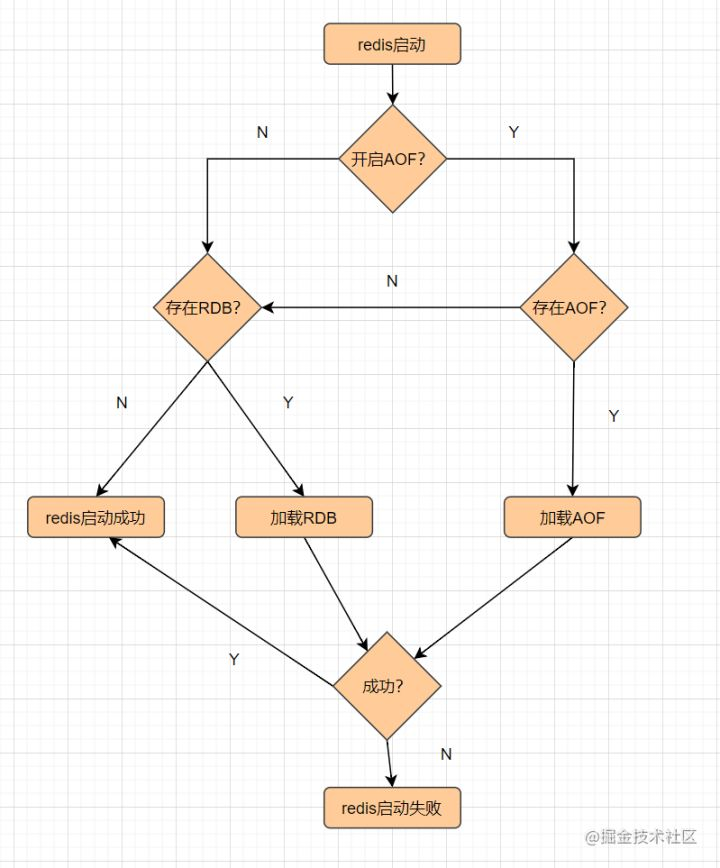
8.1 RDB
RDB，就是把内存数据以快照的形式保存到磁盘上。
什么是快照?可以这样理解，给当前时刻的数据，拍一张照片，然后保存下来。
RDB持久化，是指在指定的时间间隔内，执行指定次数的写操作，将内存中的数据集快照写入磁盘中，它是Redis默认的持久化方式。执行完操作后，在指定目录下会生成一个dump.rdb文件，Redis 重启的时候，通过加载dump.rdb文件来恢复数据。RDB触发机制主要有以下几种：

RDB 的优点
- 适合大规模的数据恢复场景，如备份，全量复制等
RDB缺点
- 没办法做到实时持久化/秒级持久化。
- 新老版本存在RDB格式兼容问题
AOF
AOF（append only file） 持久化，采用日志的形式来记录每个写操作，追加到文件中，重启时再重新执行AOF文件中的命令来恢复数据。它主要解决数据持久化的实时性问题。默认是不开启的。
AOF的工作流程如下：
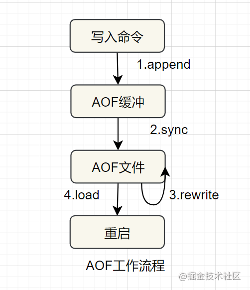
AOF的优点
- 数据的一致性和完整性更高
AOF的缺点
- AOF记录的内容越多，文件越大，数据恢复变慢。
9.怎么实现Redis的高可用？
我们在项目中使用Redis，肯定不会是单点部署Redis服务的。因为，单点部署一旦宕机，就不可用了。为了实现高可用，通常的做法是，将数据库复制多个副本以部署在不同的服务器上，其中一台挂了也可以继续提供服务。Redis 实现高可用有三种部署模式：主从模式，哨兵模式，集群模式。
9.1 主从模式
主从模式中，Redis部署了多台机器，有主节点，负责读写操作，有从节点，只负责读操作。从节点的数据来自主节点，实现原理就是主从复制机制
主从复制包括全量复制，增量复制两种。一般当slave第一次启动连接master，或者认为是第一次连接，就采用全量复制，全量复制流程如下：
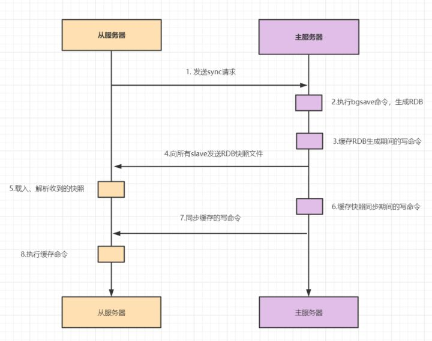
- 1.slave发送sync命令到master。
- 2.master接收到SYNC命令后，执行bgsave命令，生成RDB全量文件。
- 3.master使用缓冲区，记录RDB快照生成期间的所有写命令。
- 4.master执行完bgsave后，向所有slave发送RDB快照文件。
- 5.slave收到RDB快照文件后，载入、解析收到的快照。
- 6.master使用缓冲区，记录RDB同步期间生成的所有写的命令。
- 7.master快照发送完毕后，开始向slave发送缓冲区中的写命令;
- 8.salve接受命令请求，并执行来自master缓冲区的写命令
redis2.8版本之后，已经使用psync来替代sync，因为sync命令非常消耗系统资源，psync的效率更高。
slave与master全量同步之后，master上的数据，如果再次发生更新，就会触发增量复制。
当master节点发生数据增减时，就会触发replicationFeedSalves()函数，接下来在 Master节点上调用的每一个命令会使用replicationFeedSlaves()来同步到Slave节点。执行此函数之前呢，master节点会判断用户执行的命令是否有数据更新，如果有数据更新的话，并且slave节点不为空，就会执行此函数。这个函数作用就是：把用户执行的命令发送到所有的slave节点，让slave节点执行。流程如下：
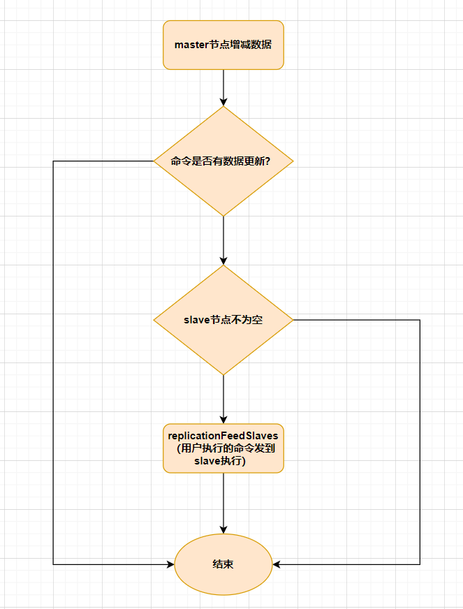
9.2 哨兵模式
主从模式中，一旦主节点由于故障不能提供服务，需要人工将从节点晋升为主节点，同时还要通知应用方更新主节点地址。显然，多数业务场景都不能接受这种故障处理方式。Redis从2.8开始正式提供了Redis Sentinel（哨兵）架构来解决这个问题。
哨兵模式，由一个或多个Sentinel实例组成的Sentinel系统，它可以监视所有的Redis主节点和从节点，并在被监视的主节点进入下线状态时，自动将下线主服务器属下的某个从节点升级为新的主节点。但是呢，一个哨兵进程对Redis节点进行监控，就可能会出现问题（单点问题），因此，可以使用多个哨兵来进行监控Redis节点，并且各个哨兵之间还会进行监控。
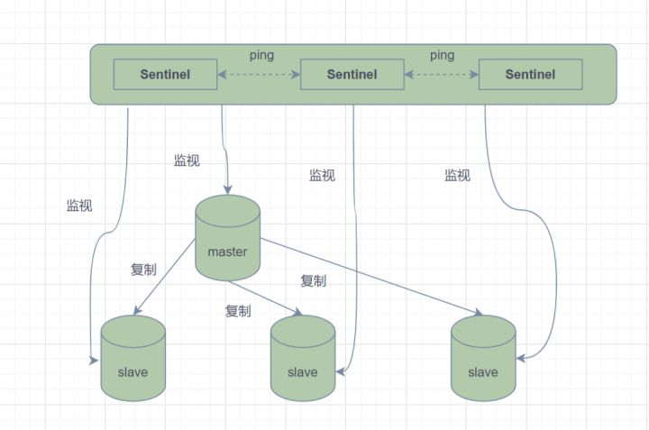
Sentinel哨兵模式
简单来说，哨兵模式就三个作用：
- 发送命令，等待Redis服务器（包括主服务器和从服务器）返回监控其运行状态；
- 哨兵监测到主节点宕机，会自动将从节点切换成主节点，然后通过发布订阅模式通知其他的从节点，修改配置文件，让它们切换主机；
- 哨兵之间还会相互监控，从而达到高可用。
故障切换的过程是怎样的呢
假设主服务器宕机，哨兵1先检测到这个结果，系统并不会马上进行 failover 过程，仅仅是哨兵1主观的认为主服务器不可用，这个现象成为主观下线。当后面的哨兵也检测到主服务器不可用，并且数量达到一定值时，那么哨兵之间就会进行一次投票，投票的结果由一个哨兵发起，进行 failover 操作。切换成功后，就会通过发布订阅模式，让各个哨兵把自己监控的从服务器实现切换主机，这个过程称为客观下线。这样对于客户端而言，一切都是透明的。
哨兵的工作模式如下：
- 每个Sentinel以每秒钟一次的频率向它所知的Master，Slave以及其他Sentinel实例发送一个 PING命令。
- 如果一个实例（instance）距离最后一次有效回复 PING 命令的时间超过 down-after-milliseconds 选项所指定的值， 则这个实例会被 Sentinel标记为主观下线。
- 如果一个Master被标记为主观下线，则正在监视这个Master的所有 Sentinel 要以每秒一次的频率确认Master的确进入了主观下线状态。
- 当有足够数量的 Sentinel（大于等于配置文件指定的值）在指定的时间范围内确认Master的确进入了主观下线状态， 则Master会被标记为客观下线。
- 在一般情况下， 每个 Sentinel 会以每10秒一次的频率向它已知的所有Master，Slave发送 INFO 命令。
- 当Master被 Sentinel 标记为客观下线时，Sentinel 向下线的 Master 的所有 Slave 发送 INFO 命令的频率会从 10 秒一次改为每秒一次
- 若没有足够数量的 Sentinel同意Master已经下线， Master的客观下线状态就会被移除；若Master 重新向 Sentinel 的 PING 命令返回有效回复， Master 的主观下线状态就会被移除。
9.3 Cluster集群模式
哨兵模式基于主从模式，实现读写分离，它还可以自动切换，系统可用性更高。但是它每个节点存储的数据是一样的，浪费内存，并且不好在线扩容。因此，Cluster集群应运而生，它在Redis3.0加入的，实现了Redis的分布式存储。对数据进行分片，也就是说每台Redis节点上存储不同的内容，来解决在线扩容的问题。并且，它也提供复制和故障转移的功能。
Cluster集群节点的通讯
一个Redis集群由多个节点组成，各个节点之间是怎么通信的呢？通过Gossip协议！
Redis Cluster集群通过Gossip协议进行通信，节点之前不断交换信息，交换的信息内容包括节点出现故障、新节点加入、主从节点变更信息、slot信息等等。常用的Gossip消息分为4种，分别是：ping、pong、meet、fail。
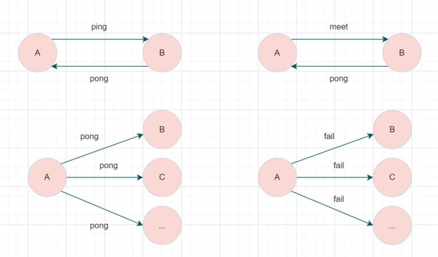
- meet消息：通知新节点加入。消息发送者通知接收者加入到当前集群，meet消息通信正常完成后，接收节点会加入到集群中并进行周期性的ping、pong消息交换。
- ping消息：集群内交换最频繁的消息，集群内每个节点每秒向多个其他节点发送ping消息，用于检测节点是否在线和交换彼此状态信息。
- pong消息：当接收到ping、meet消息时，作为响应消息回复给发送方确认消息正常通信。pong消息内部封装了自身状态数据。节点也可以向集群内广播自身的pong消息来通知整个集群对自身状态进行更新。
- fail消息：当节点判定集群内另一个节点下线时，会向集群内广播一个fail消息，其他节点接收到fail消息之后把对应节点更新为下线状态。
特别的，每个节点是通过集群总线(cluster bus) 与其他的节点进行通信的。通讯时，使用特殊的端口号，即对外服务端口号加10000。例如如果某个node的端口号是6379，那么它与其它nodes通信的端口号是 16379。nodes 之间的通信采用特殊的二进制协议。
Hash Slot插槽算法
既然是分布式存储，Cluster集群使用的分布式算法是一致性Hash嘛？并不是，而是Hash Slot插槽算法。
插槽算法把整个数据库被分为16384个slot（槽），每个进入Redis的键值对，根据key进行散列，分配到这16384插槽中的一个。使用的哈希映射也比较简单，用CRC16算法计算出一个16 位的值，再对16384取模。数据库中的每个键都属于这16384个槽的其中一个，集群中的每个节点都可以处理这16384个槽。
集群中的每个节点负责一部分的hash槽，比如当前集群有A、B、C个节点，每个节点上的哈希槽数 =16384/3，那么就有：
- 节点A负责0~5460号哈希槽
- 节点B负责5461~10922号哈希槽
- 节点C负责10923~16383号哈希槽
Redis Cluster集群
Redis Cluster集群中，需要确保16384个槽对应的node都正常工作，如果某个node出现故障，它负责的slot也会失效，整个集群将不能工作。
因此为了保证高可用，Cluster集群引入了主从复制，一个主节点对应一个或者多个从节点。当其它主节点 ping 一个主节点 A 时，如果半数以上的主节点与 A 通信超时，那么认为主节点 A 宕机了。如果主节点宕机时，就会启用从节点。
在Redis的每一个节点上，都有两个玩意，一个是插槽（slot），它的取值范围是0~16383。另外一个是cluster，可以理解为一个集群管理的插件。当我们存取的key到达时，Redis 会根据CRC16算法得出一个16 bit的值，然后把结果对16384取模。酱紫每个key都会对应一个编号在 0~16383 之间的哈希槽，通过这个值，去找到对应的插槽所对应的节点，然后直接自动跳转到这个对应的节点上进行存取操作。
虽然数据是分开存储在不同节点上的，但是对客户端来说，整个集群Cluster，被看做一个整体。客户端端连接任意一个node，看起来跟操作单实例的Redis一样。当客户端操作的key没有被分配到正确的node节点时，Redis会返回转向指令，最后指向正确的node，这就有点像浏览器页面的302 重定向跳转。
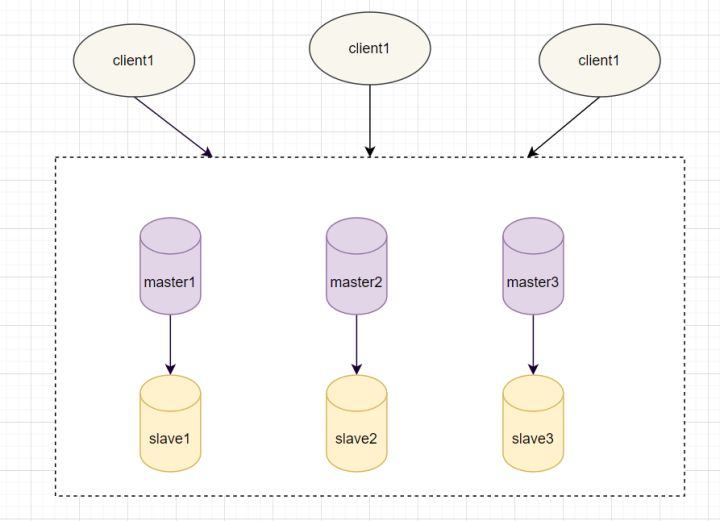
故障转移
Redis集群实现了高可用，当集群内节点出现故障时，通过故障转移，以保证集群正常对外提供服务。
redis集群通过ping/pong消息，实现故障发现。这个环境包括主观下线和客观下线。
主观下线： 某个节点认为另一个节点不可用，即下线状态，这个状态并不是最终的故障判定，只能代表一个节点的意见，可能存在误判情况。
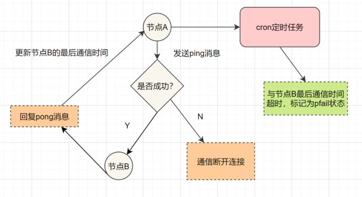
主观下线
客观下线： 指标记一个节点真正的下线，集群内多个节点都认为该节点不可用，从而达成共识的结果。如果是持有槽的主节点故障，需要为该节点进行故障转移。
- 假如节点A标记节点B为主观下线，一段时间后，节点A通过消息把节点B的状态发到其它节点，当节点C接受到消息并解析出消息体时，如果发现节点B的pfail状态时，会触发客观下线流程；
- 当下线为主节点时，此时Redis Cluster集群为统计持有槽的主节点投票，看投票数是否达到一半，当下线报告统计数大于一半时，被标记为客观下线状态。
流程如下：
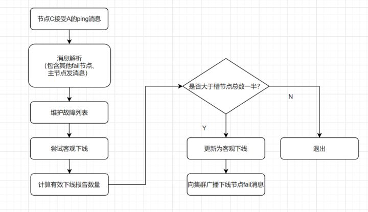
客观下线
故障恢复：故障发现后，如果下线节点的是主节点，则需要在它的从节点中选一个替换它，以保证集群的高可用。流程如下：
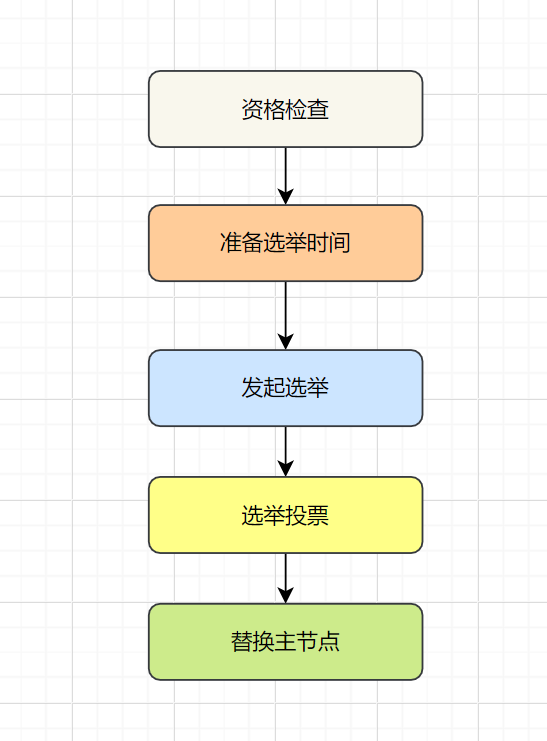
- 资格检查：检查从节点是否具备替换故障主节点的条件。
- 准备选举时间：资格检查通过后，更新触发故障选举时间。
- 发起选举：到了故障选举时间，进行选举。
- 选举投票：只有持有槽的主节点才有票，从节点收集到足够的选票（大于一半），触发替换主节点操作
10. 使用过Redis分布式锁嘛？有哪些注意点呢？
分布式锁，是控制分布式系统不同进程共同访问共享资源的一种锁的实现。秒杀下单、抢红包等等业务场景，都需要用到分布式锁，我们项目中经常使用Redis作为分布式锁。
选了Redis分布式锁的几种实现方法，大家来讨论下，看有没有啥问题哈。
- 命令setnx + expire分开写
- setnx + value值是过期时间
- set的扩展命令（set ex px nx）
- set ex px nx + 校验唯一随机值,再删除
10.1 命令setnx + expire分开写
if（jedis.setnx(key,lock_value) == 1）{ //加锁 expire（key，100）; //设置过期时间 try { do something //业务请求 }catch(){ } finally { jedis.del(key); //释放锁 } }
如果执行完setnx加锁，正要执行expire设置过期时间时，进程crash掉或者要重启维护了，那这个锁就“长生不老”了，别的线程永远获取不到锁啦，所以分布式锁不能这么实现。
10.2 setnx + value值是过期时间
long expires = System.currentTimeMillis() + expireTime; //系统时间+设置的过期时间 String expiresStr = String.valueOf(expires); // 如果当前锁不存在，返回加锁成功 if (jedis.setnx(key, expiresStr) == 1) { return true; } // 如果锁已经存在，获取锁的过期时间 String currentValueStr = jedis.get(key); // 如果获取到的过期时间，小于系统当前时间，表示已经过期 if (currentValueStr != null && Long.parseLong(currentValueStr) < System.currentTimeMillis()) { // 锁已过期，获取上一个锁的过期时间，并设置现在锁的过期时间（不了解redis的getSet命令的小伙伴，可以去官网看下哈） String oldValueStr = jedis.getSet(key_resource_id, expiresStr); if (oldValueStr != null && oldValueStr.equals(currentValueStr)) { // 考虑多线程并发的情况，只有一个线程的设置值和当前值相同，它才可以加锁 return true; } } //其他情况，均返回加锁失败 return false; }
笔者看过有开发小伙伴是这么实现分布式锁的，但是这种方案也有这些缺点：
- 过期时间是客户端自己生成的，分布式环境下，每个客户端的时间必须同步。
- 没有保存持有者的唯一标识，可能被别的客户端释放/解锁。
- 锁过期的时候，并发多个客户端同时请求过来，都执行了
jedis.getSet()，最终只能有一个客户端加锁成功，但是该客户端锁的过期时间，可能被别的客户端覆盖。
10.3：set的扩展命令（set ex px nx）（注意可能存在的问题）
if（jedis.set(key, lock_value, "NX", "EX", 100s) == 1）{ //加锁 try { do something //业务处理 }catch(){ } finally { jedis.del(key); //释放锁 } }
这个方案可能存在这样的问题：
- 锁过期释放了，业务还没执行完。
- 锁被别的线程误删。
10.4 set ex px nx + 校验唯一随机值,再删除
if（jedis.set(key, uni_request_id, "NX", "EX", 100s) == 1）{ //加锁 try { do something //业务处理 }catch(){ } finally { //判断是不是当前线程加的锁,是才释放 if (uni_request_id.equals(jedis.get(key))) { jedis.del(key); //释放锁 } } }
在这里，判断当前线程加的锁和释放锁是不是一个原子操作。如果调用jedis.del()释放锁的时候，可能这把锁已经不属于当前客户端，会解除他人加的锁。
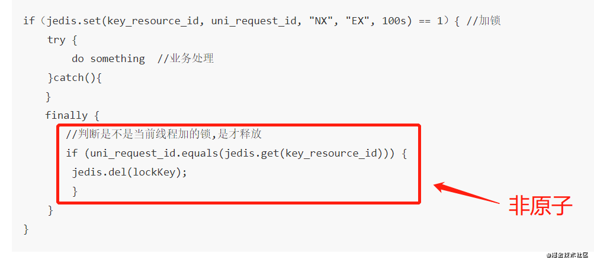
一般也是用lua脚本代替。lua脚本如下：
if redis.call('get',KEYS[1]) == ARGV[1] then return redis.call('del',KEYS[1]) else return 0 end;
这种方式比较不错了，一般情况下，已经可以使用这种实现方式。但是存在锁过期释放了，业务还没执行完的问题（实际上，估算个业务处理的时间，一般没啥问题了）。
11. 使用过Redisson嘛？说说它的原理
分布式锁可能存在锁过期释放，业务没执行完的问题。有些小伙伴认为，稍微把锁过期时间设置长一些就可以啦。其实我们设想一下，是否可以给获得锁的线程，开启一个定时守护线程，每隔一段时间检查锁是否还存在，存在则对锁的过期时间延长，防止锁过期提前释放。
当前开源框架Redisson就解决了这个分布式锁问题。我们一起来看下Redisson底层原理是怎样的吧：
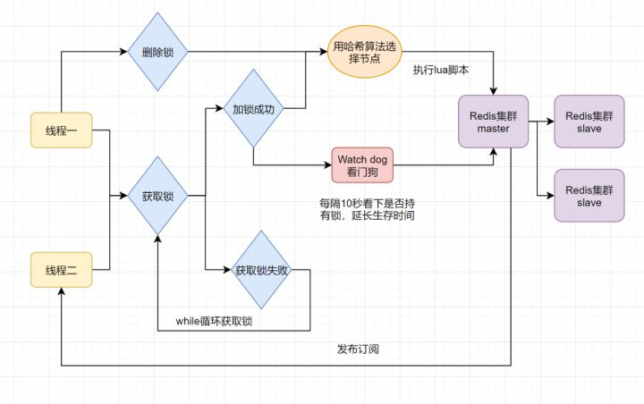
只要线程一加锁成功，就会启动一个watch dog看门狗，它是一个后台线程，会每隔10秒检查一下，如果线程1还持有锁，那么就会不断的延长锁key的生存时间。因此，Redisson就是使用Redisson解决了锁过期释放，业务没执行完问题。
12. 什么是Redlock算法
Redis一般都是集群部署的，假设数据在主从同步过程，主节点挂了，Redis分布式锁可能会有哪些问题呢？一起来看些这个流程图：
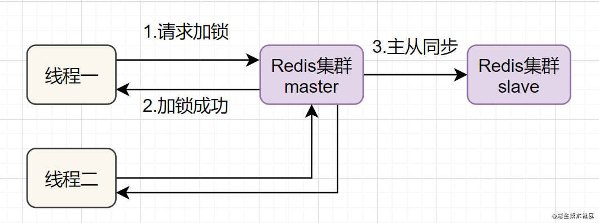
如果线程一在Redis的master节点上拿到了锁，但是加锁的key还没同步到slave节点。恰好这时，master节点发生故障，一个slave节点就会升级为master节点。线程二就可以获取同个key的锁啦，但线程一也已经拿到锁了，锁的安全性就没了。
为了解决这个问题，Redis作者 antirez提出一种高级的分布式锁算法：Redlock。Redlock核心思想是这样的：
搞多个Redis master部署，以保证它们不会同时宕掉。并且这些master节点是完全相互独立的，相互之间不存在数据同步。同时，需要确保在这多个master实例上，是与在Redis单实例，使用相同方法来获取和释放锁。
我们假设当前有5个Redis master节点，在5台服务器上面运行这些Redis实例。
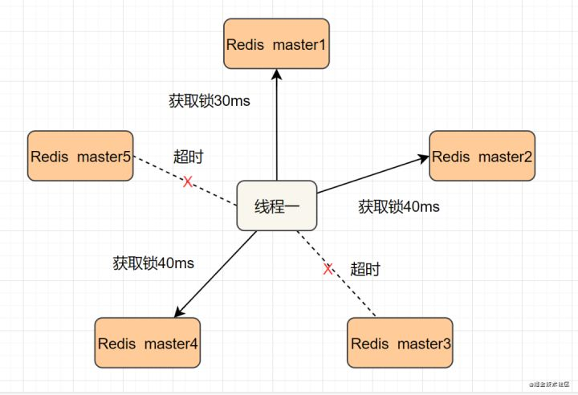
RedLock的实现步骤:如下
- 1.获取当前时间，以毫秒为单位。
- 2.按顺序向5个master节点请求加锁。客户端设置网络连接和响应超时时间，并且超时时间要小于锁的失效时间。（假设锁自动失效时间为10秒，则超时时间一般在5-50毫秒之间,我们就假设超时时间是50ms吧）。如果超时，跳过该master节点，尽快去尝试下一个master节点。
- 3.客户端使用当前时间减去开始获取锁时间（即步骤1记录的时间），得到获取锁使用的时间。当且仅当超过一半（N/2+1，这里是5/2+1=3个节点）的Redis master节点都获得锁，并且使用的时间小于锁失效时间时，锁才算获取成功。（如上图，10s> 30ms+40ms+50ms+4m0s+50ms）
- 如果取到了锁，key的真正有效时间就变啦，需要减去获取锁所使用的时间。
- 如果获取锁失败（没有在至少N/2+1个master实例取到锁，有或者获取锁时间已经超过了有效时间），客户端要在所有的master节点上解锁（即便有些master节点根本就没有加锁成功，也需要解锁，以防止有些漏网之鱼）。
简化下步骤就是：
- 按顺序向5个master节点请求加锁
- 根据设置的超时时间来判断，是不是要跳过该master节点。
- 如果大于等于三个节点加锁成功，并且使用的时间小于锁的有效期，即可认定加锁成功啦。
- 如果获取锁失败，解锁！
13. Redis的跳跃表

跳跃表
- 跳跃表是有序集合zset的底层实现之一
- 跳跃表支持平均O（logN）,最坏 O（N）复杂度的节点查找，还可以通过顺序性操作批量处理节点。
- 跳跃表实现由zskiplist和zskiplistNode两个结构组成，其中zskiplist用于保存跳跃表信息（如表头节点、表尾节点、长度），而zskiplistNode则用于表示跳跃表节点。
- 跳跃表就是在链表的基础上，增加多级索引提升查找效率。
14. MySQL与Redis 如何保证双写一致性
- 缓存延时双删
- 删除缓存重试机制
- 读取biglog异步删除缓存
14.1 延时双删？
什么是延时双删呢？流程图如下：
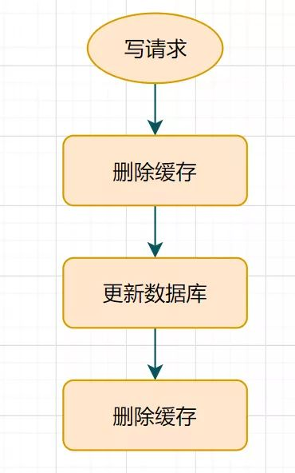
延时双删流程
- 先删除缓存
- 再更新数据库
- 休眠一会（比如1秒），再次删除缓存。
这个休眠一会，一般多久呢？都是1秒？
这个休眠时间 = 读业务逻辑数据的耗时 + 几百毫秒。为了确保读请求结束，写请求可以删除读请求可能带来的缓存脏数据。
这种方案还算可以，只有休眠那一会（比如就那1秒），可能有脏数据，一般业务也会接受的。但是如果第二次删除缓存失败呢？缓存和数据库的数据还是可能不一致，对吧？给Key设置一个自然的expire过期时间，让它自动过期怎样？那业务要接受过期时间内，数据的不一致咯？还是有其他更佳方案呢？
14.2 删除缓存重试机制
因为延时双删可能会存在第二步的删除缓存失败，导致的数据不一致问题。可以使用这个方案优化：删除失败就多删除几次呀,保证删除缓存成功就可以了呀~ 所以可以引入删除缓存重试机制
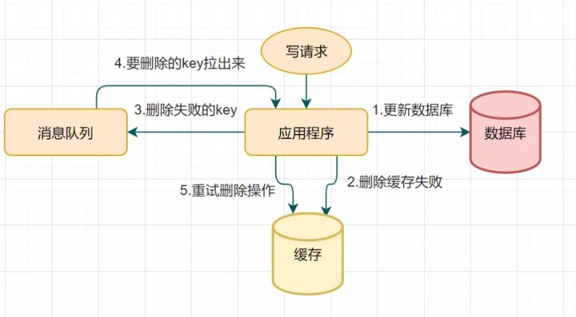
删除缓存重试流程
- 写请求更新数据库
- 缓存因为某些原因，删除失败
- 把删除失败的key放到消息队列
- 消费消息队列的消息，获取要删除的key
- 重试删除缓存操作
14.3 读取biglog异步删除缓存
重试删除缓存机制还可以吧，就是会造成好多业务代码入侵。其实，还可以这样优化：通过数据库的binlog来异步淘汰key。
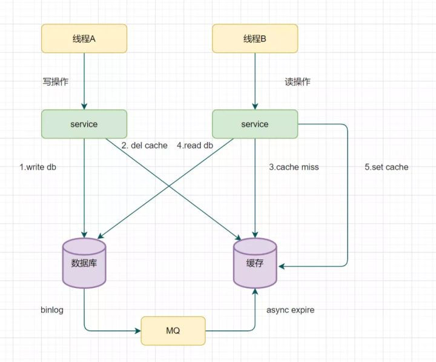
以mysql为例吧
- 可以使用阿里的canal将binlog日志采集发送到MQ队列里面
- 然后通过ACK机制确认处理这条更新消息，删除缓存，保证数据缓存一致性
15. 为什么Redis 6.0 之后改多线程呢？
- Redis6.0之前，Redis在处理客户端的请求时，包括读socket、解析、执行、写socket等都由一个顺序串行的主线程处理，这就是所谓的“单线程”。
- Redis6.0之前为什么一直不使用多线程？使用Redis时，几乎不存在CPU成为瓶颈的情况， Redis主要受限于内存和网络。例如在一个普通的Linux系统上，Redis通过使用pipelining每秒可以处理100万个请求，所以如果应用程序主要使用O(N)或O(log(N))的命令，它几乎不会占用太多CPU。
redis使用多线程并非是完全摒弃单线程，redis还是使用单线程模型来处理客户端的请求，只是使用多线程来处理数据的读写和协议解析，执行命令还是使用单线程。
这样做的目的是因为redis的性能瓶颈在于网络IO而非CPU，使用多线程能提升IO读写的效率，从而整体提高redis的性能。
16. 聊聊Redis 事务机制
Redis通过MULTI、EXEC、WATCH等一组命令集合，来实现事务机制。事务支持一次执行多个命令，一个事务中所有命令都会被序列化。在事务执行过程，会按照顺序串行化执行队列中的命令，其他客户端提交的命令请求不会插入到事务执行命令序列中。
简言之，Redis事务就是顺序性、一次性、排他性的执行一个队列中的一系列命令。
Redis执行事务的流程如下：
- 开始事务（MULTI）
- 命令入队
- 执行事务（EXEC）、撤销事务（DISCARD ）
17. Redis的Hash 冲突怎么办
Redis 作为一个K-V的内存数据库，它使用用一张全局的哈希来保存所有的键值对。这张哈希表，有多个哈希桶组成，哈希桶中的entry元素保存了key和value指针，其中*key指向了实际的键，*value指向了实际的值。
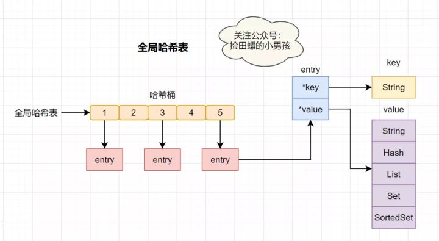
哈希表查找速率很快的，有点类似于Java中的HashMap，它让我们在O(1) 的时间复杂度快速找到键值对。首先通过key计算哈希值，找到对应的哈希桶位置，然后定位到entry，在entry找到对应的数据。
什么是哈希冲突？
哈希冲突：通过不同的key，计算出一样的哈希值，导致落在同一个哈希桶中。
Redis为了解决哈希冲突，采用了链式哈希。链式哈希是指同一个哈希桶中，多个元素用一个链表来保存，它们之间依次用指针连接。
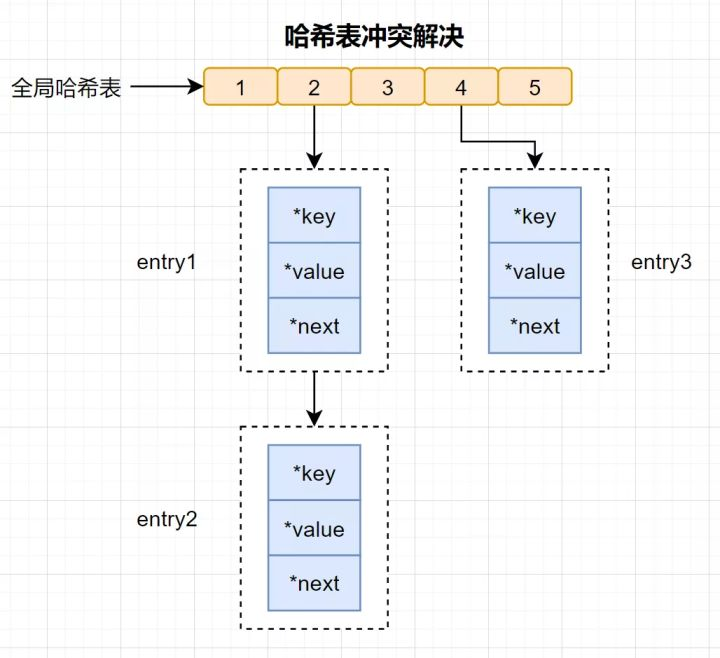
有些读者可能还会有疑问：哈希冲突链上的元素只能通过指针逐一查找再操作。当往哈希表插入数据很多，冲突也会越多，冲突链表就会越长，那查询效率就会降低了。
为了保持高效，Redis 会对哈希表做rehash操作，也就是增加哈希桶，减少冲突。为了rehash更高效，Redis还默认使用了两个全局哈希表，一个用于当前使用，称为主哈希表，一个用于扩容，称为备用哈希表。
18. 在生成 RDB期间，Redis 可以同时处理写请求么？
可以的，Redis提供两个指令生成RDB，分别是save和bgsave。
- 如果是save指令，会阻塞，因为是主线程执行的。
- 如果是bgsave指令，是fork一个子进程来写入RDB文件的，快照持久化完全交给子进程来处理，父进程则可以继续处理客户端的请求。
19. Redis底层，使用的什么协议?
RESP，英文全称是Redis Serialization Protocol,它是专门为redis设计的一套序列化协议. 这个协议其实在redis的1.2版本时就已经出现了,但是到了redis2.0才最终成为redis通讯协议的标准。
RESP主要有实现简单、解析速度快、可读性好等优点。
20. 布隆过滤器
应对缓存穿透问题，我们可以使用布隆过滤器。布隆过滤器是什么呢？
布隆过滤器是一种占用空间很小的数据结构，它由一个很长的二进制向量和一组Hash映射函数组成，它用于检索一个元素是否在一个集合中，空间效率和查询时间都比一般的算法要好的多，缺点是有一定的误识别率和删除困难。
布隆过滤器原理是？假设我们有个集合A，A中有n个元素。利用k个哈希散列函数，将A中的每个元素映射到一个长度为a位的数组B中的不同位置上，这些位置上的二进制数均设置为1。如果待检查的元素，经过这k个哈希散列函数的映射后，发现其k个位置上的二进制数全部为1，这个元素很可能属于集合A，反之，一定不属于集合A。
来看个简单例子吧，假设集合A有3个元素，分别为{d1,d2,d3}。有1个哈希函数，为Hash1。现在将A的每个元素映射到长度为16位数组B。
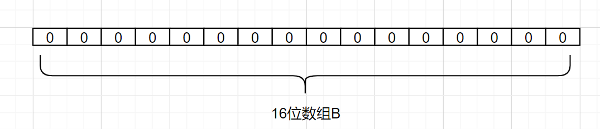
我们现在把d1映射过来，假设Hash1（d1）= 2，我们就把数组B中，下标为2的格子改成1，如下：
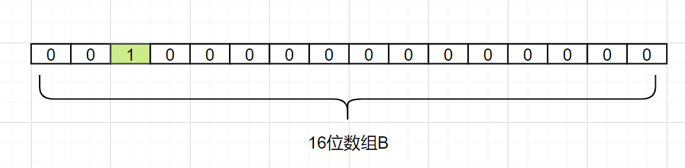
我们现在把d2也映射过来，假设Hash1（d2）= 5，我们把数组B中，下标为5的格子也改成1，如下：
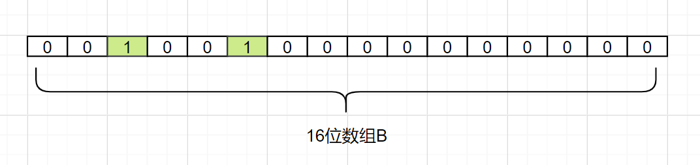
接着我们把d3也映射过来，假设Hash1（d3）也等于 2，它也是把下标为2的格子标1：
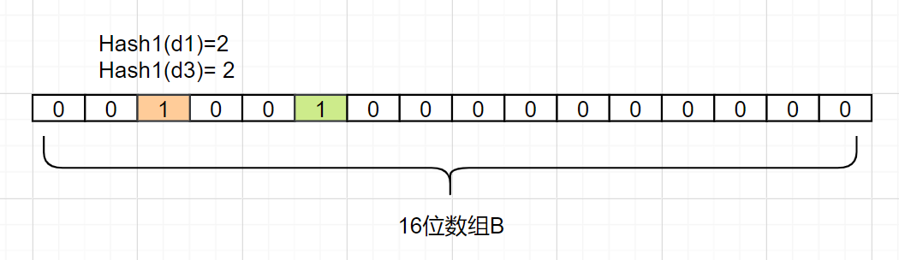
因此，我们要确认一个元素dn是否在集合A里，我们只要算出Hash1（dn）得到的索引下标，只要是0，那就表示这个元素不在集合A，如果索引下标是1呢？那该元素可能是A中的某一个元素。因为你看，d1和d3得到的下标值，都可能是1，还可能是其他别的数映射的，布隆过滤器是存在这个缺点的：会存在hash碰撞导致的假阳性，判断存在误差。
如何减少这种误差呢？
- 搞多几个哈希函数映射，降低哈希碰撞的概率
- 同时增加B数组的bit长度，可以增大hash函数生成的数据的范围，也可以降低哈希碰撞的概率
我们又增加一个Hash2哈希映射函数，假设Hash2（d1）=6,Hash2（d3）=8,它俩不就不冲突了嘛，如下：
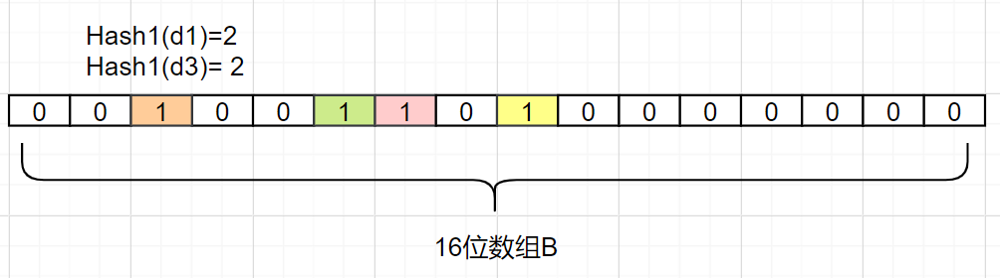
即使存在误差，我们可以发现，布隆过滤器并没有存放完整的数据，它只是运用一系列哈希映射函数计算出位置，然后填充二进制向量。如果数量很大的话，布隆过滤器通过极少的错误率，换取了存储空间的极大节省，还是挺划算的。
目前布隆过滤器已经有相应实现的开源类库啦，如Google的Guava类库，Twitter的 Algebird 类库，信手拈来即可，或者基于Redis自带的Bitmaps自行实现设计也是可以的。


 7019
7019


 被折叠的 0 条评论
为什么被折叠?
被折叠的 0 条评论
为什么被折叠?
 到【灌水乐园】发言
到【灌水乐园】发言